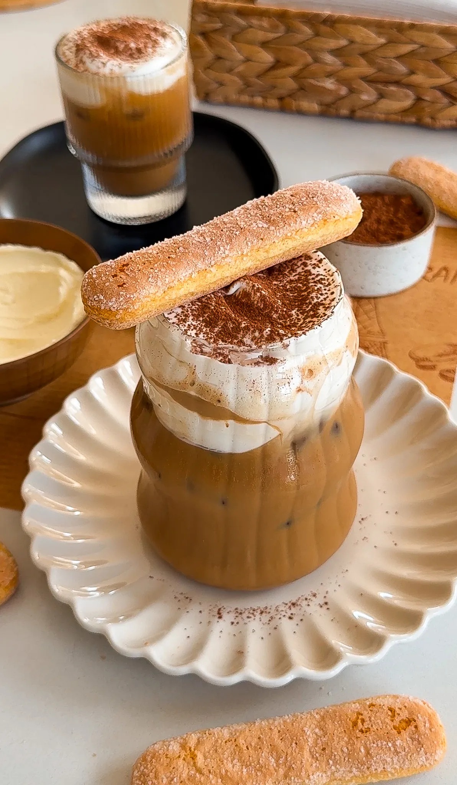

DRINKS
KARAK TEA

Creamy, bold, and deeply spiced, karak tea is the Middle
Eastern cousin of chai, known for its rich flavors and
comforting warmth. Infused with cardamom, cinnamon, and
ginger, it's simmered slowly to create a velvety, fragrant
cup. Perfect for chilly mornings or whenever you need a
little extra warmth, this tea never disappoints.
JUMP TO RECIPE
DRINKS
KARAK TEA

Creamy, bold, and deeply spiced, karak tea is the Middle
Eastern cousin of chai, known for its rich flavors and
comforting warmth. Infused with cardamom, cinnamon, and
ginger, it's simmered slowly to create a velvety, fragrant
cup. Perfect for chilly mornings or whenever you need a
little extra warmth, this tea never disappoints.
PRINT RECIPE
PIN RECIPE
PREP TIME:
5 MINUTES
COOK TIME:
10 MINUTES
TOTAL TIME:
15 MINUTES
YIELDS:
4
INGREDIENTS
- 2 cups water
- 2 cups evaporated milk
- 6 to 8 cardamom pods, lightly crushed
- 3 cinnamon sticks
- 1 ginger cube (or a small piece of fresh ginger)
- 1/4 cup light brown sugar (adjust to taste)
- 1 teaspoon vanilla extract
- 4 black/red tea bags
INSTRUCTIONS
-
In a medium pot, combine the water, evaporated milk,
cardamom pods, cinnamon sticks, and ginger. Bring the mixture
to a gentle boil over medium heat.
-
Once it starts bubbling, reduce the heat to low and let it
simmer for about 5 to 7 minutes. This allows the spices to
infuse the milk and water with their rich, warm flavors.
-
Place the tea bags into the pot and let them steep for 3 to 5
minutes, depending on how strong you like your tea. Stir
occasionally to help the tea blend with the spiced milk.
You'll know it's ready when the color turns a deep, caramel
brown. Stir in the brown sugar until it dissolves completely.
-
Add the vanilla extract and let it simmer for another minute
to enhance the flavor.
-
Remove the pot from the heat and carefully strain the tea into
cups to remove the spices and tea bags.
-
Serve hot and enjoy!
DRINKS
TIRAMISU LATTE

If you love tiramisu, this latte will easily become your fave way
to caffeinate! Sweet espresso, creamy milk, and a velvety
mascarpone foam come together for a sip that's pure indulgence.
Whether hot or iced, it's like treating yourself to dessert—but
in drinkable form!
JUMP TO RECIPE
DRINKS
TIRAMISU LATTE
If you love tiramisu, this latte will easily become your fave way
to caffeinate! Sweet espresso, creamy milk, and a velvety
mascarpone foam come together for a sip that's pure indulgence.
Whether hot or iced, it's like treating yourself to dessert—but
in drinkable form!
PRINT RECIPE
PIN RECIPE
PREP TIME:
10 MINUTES
TOTAL TIME:
10 MINUTES
YIELDS:
2
INGREDIENTS
FOR THE ESPRESSO:
- 4 shots espresso
-
2 to 4 tablespoons brown sugar or chocolate
mocha sauce
SWEET FOAM:
- 1/2 cup heavy cream
- 1/4 cup mascarpone cheese
- 2 tablespoons simple syrup
- 1 teaspoon vanilla extract
FOR THE LATTE:
- 1 to 2 cups milk (whole milk or preferred milk)
- ice (for iced version)
-
cocoa powder or chocolate shavings
(optional, for garnish)
- lady fingers, optional
INSTRUCTIONS
PREPARE ESPRESSO:
-
Brew 4 shots of espresso, 2 per drink. For a stronger
drink, brew 3 shots of espresso per drink.
-
While still hot, stir in brown sugar or mocha sauce to your
desired sweetness until fully dissolved. Set aside.
MAKE TIRAMISU FOAM:
-
In a mixing bowl or using a handheld frother,
combine 1/4 cup heavy cream, 2 tablespoons
mascarpone cheese, 1 tablespoon simple
syrup, and 1/2 teaspoon vanilla extract.
-
Whip until the mixture thickens slightly,
forming a soft, pourable foam.
HOT LATTE:
-
Heat 1 cup of milk until steaming, but do not let it boil.
Froth if desired.
-
Pour the sweetened espresso into a mug.
-
Add the steamed milk, filling the mug almost to the top.
-
Spoon the sweet foam generously over the top.
-
Sprinkle with cocoa powder or chocolate shavings
if desired.
ICED LATTE:
-
Fill a glass with ice.
-
Pour 1 cup of cold milk over the ice, leaving
room for the espresso.
-
Slowly pour the sweetened espresso over the milk to
create a layered effect.
-
Top with the sweet foam, letting it cascade over the ice.
-
Finish with a dusting of cocoa powder or
chocolate shavings if desired.
DRINKS
HOT COCOA WITH TORCHED MARSHMALLOW TOPPING

There's nothing like a warm cup of hot cocoa to cozy up to
but when you add a creamy, toasted marshmallow topping, it
becomes next-level indulgent. Think rich, velvety hot cocoa
paired with a golden, fluffy cloud that has just the right
amount of sweetness and a hint of campfire nostalgia.
Whether you're treating yourself on a chilly day or
serving it up for a special occasion, this recipe is
sure to impress every time.
JUMP TO RECIPE
DRINKS
HOT COCOA WITH TORCHED MARSHMALLOW TOPPING
This hot cocoa is the ultimate cozy treat, topped with a
luscious swirl of marshmallow that's toasted to golden perfection.
the combination of rich, creamy cocoa and the slightly crisp,
fluffy topping feels like a warm hug in a mug.
It's indulgent, fun, and perfect for any chilly day!
PRINT RECIPE
PIN RECIPE
PREP TIME:
10 MINUTES
COOK TIME:
20 MINUTES
TOTAL TIME:
30 MINUTES
YIELDS:
4
INGREDIENTS
HOT COCOA:
- 1 3/4 cup evaporated milk
- 1 1/2 cup whole or 2% milk
- 1/4 cup heavy cream
- 3 tablespoons brown sugar
- 1 teaspoon vanilla extract
- 1/4 cup cocoa powder
- 4 ounces semi-sweet chocolate
- pinch of salt
MARSHMALLOW TOPPING:
- 4 egg whites
- 1 cup white granulated sugar
- 1 cup corn syrup
- 1/2 cup water
- 3/4 teaspoon cream of tartar
- 1 teaspoon vanilla extract
INSTRUCTIONS
PREPARE THE HOT COCOA:
-
In a medium saucepan, combine evaporated milk,
regular milk, and heavy cream over medium heat.
-
Stir in brown sugar, cocoa powder, and a
pinch of salt until smooth and warmed through.
-
Add semi-sweet chocolate and whisk until fully melted.
-
Stir in vanilla extract, adjust sweetness as desired,
and keep warm on low heat.
MAKE THE MARSHMALLOW FLUFF:
-
In a mixing bowl, add egg whites and cream of tartar.
Whisk until the mixture becomes bubbly and foamy.
-
In a saucepan, combine water, sugar, and corn syrup.
Heat over medium heat, stirring until the
sugar dissolves.
-
Allow the mixture to simmer without stirring further,
until it reaches about 240°F or 115°C using a candy
thermometer.
-
With the mixer running at medium speed,
slowly stream the hot syrup into the egg whites.
Avoid pouring too quickly to prevent scrambling.
-
Once all the syrup is added, increase the mixer speed
to high and beat until the mixture is glossy and holds
stiff peaks.
ASSEMBLE AND TORCH:
-
Pour the prepared hot cocoa into cups or mugs.
-
Transfer the marshmallow topping to a piping
bag fitted with a star or round tip.
-
Pipe the marshmallow around the rim of each cup.
-
Use a kitchen torch to toast the marshmallow until
golden brown.
-
Serve immediately and enjoy your elevated
hot cocoa experience!